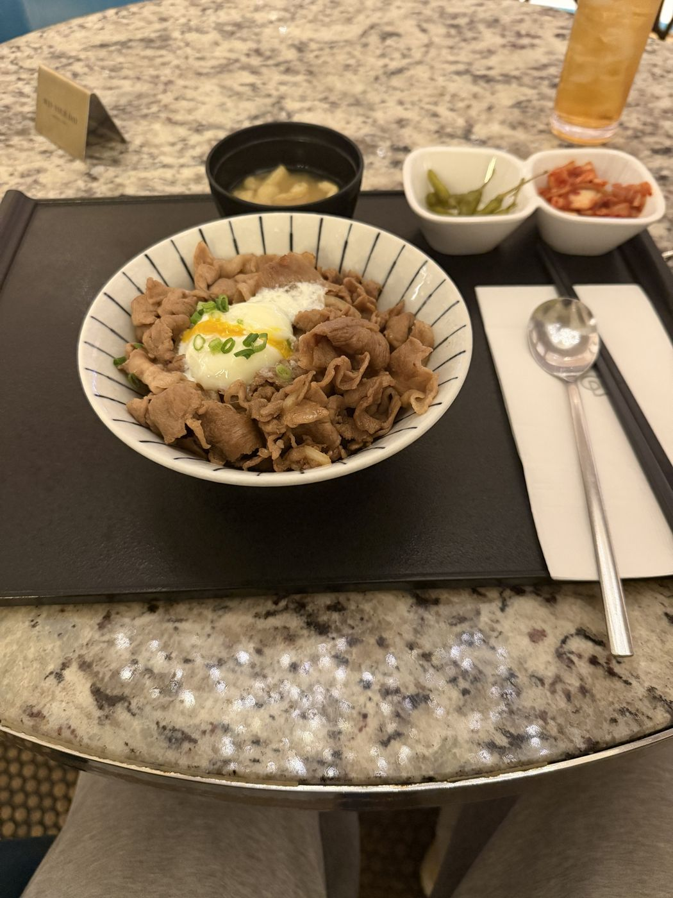
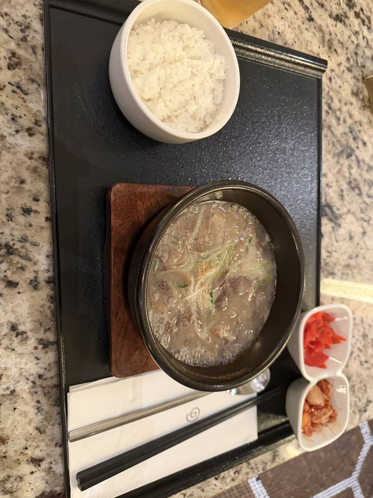
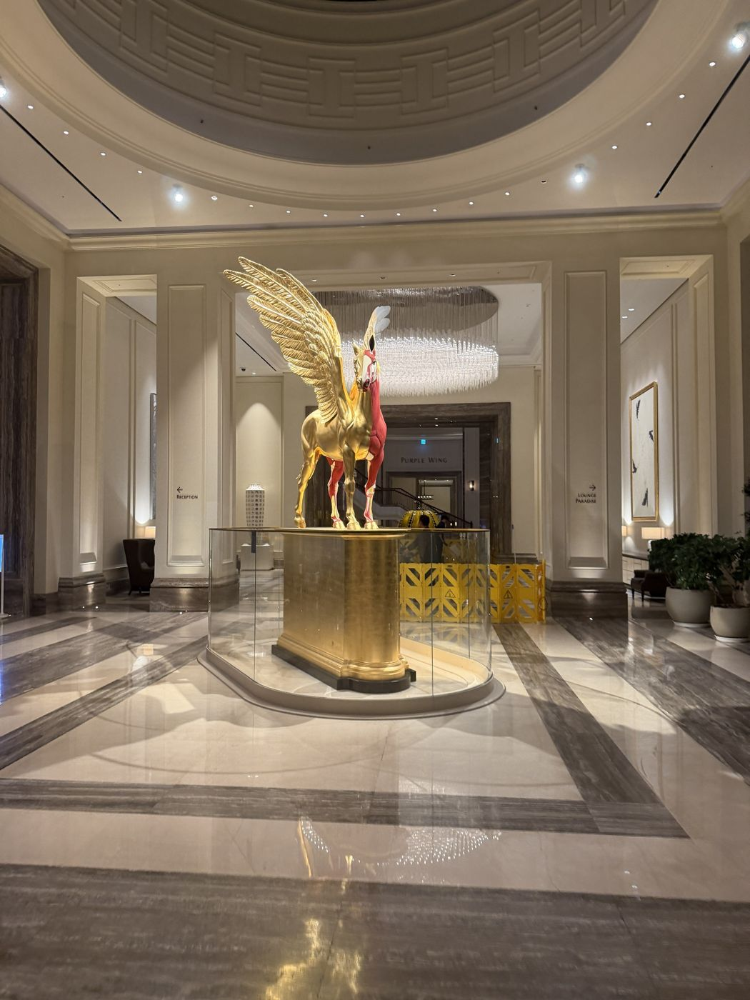

2026年11月前半、弾丸でパラダイスシティに行ってきました。結果はタコ負け。負けたからこそ分かった、カジノとの付き合い方をまとめます。写真は運営者が撮影しました。



結果：600万ウォンのタコ負け
ブラックジャックもスリーカードポーカーもボロボロで、600万ウォン負けました。笑。ギャンブルには「流れ」という名のオカルトが存在すると、身にしみて分かりました。しばらくギャンブルはお預けにしようと思います。
終わる時間は、始める前に決める
カジノは、最初に「何時に終わるか」を決めておかないと、際限なく続けてしまいます。これがいちばん危ないところです。席に着く前に、終わる時間と使っていい金額を決めておきましょう。
クレジットカードは1枚だけ持っていく
カードを何枚も持っていると、負けを取り返そうとして次のカードを使ってしまいがちです。次からは、海外手数料が低めのカードを1枚だけ持っていくことにします。手数料の考え方は、カードでチップを買うときの記事にまとめています。
負けた分の5%が戻ってくる
今回の600万ウォンの負けは、負けた額の5%が戻ってくるイベントの対象でした。次に行ったときは、30万ウォン分からのスタートになります。対象になる条件や戻る割合は、時期や会員ランクで変わる可能性があるので、デスクで確認してください。
負けて食べるご飯は、とても複雑
負けたあとに食べたのは、温泉卵がのった牛丼のセットと、白いスープとご飯のセットです。おいしいのに、なんとも言えない気持ちで食べました。
カジノには「何者かわからない人たち」がいる
これは持論ですが、カジノは賭け事をする場所であると同時に、「何者かわからない人たち」がたくさんいる場所です。そういう人と話してみると、普段の生活では交わることのない人ばかりなので、とても刺激になります。それも、カジノのすばらしいところだと思います。
眠すぎるので、ハイアットの無料宿泊を
タコ負けして眠すぎるので、ハイアット リージェンシー 仁川の無料宿泊キャンペーンを取ろうと思います。今のキャンペーンの内容は、キャンペーンのページにまとめています。
大事なこと
これは運営者の体験で、まねをすすめるものではありません。カジノで勝てる保証はなく、長く続けるほどお店が有利になるように作られています。なくなっても困らない金額だけで、時間を決めて楽しんでください。
この記事は体験談です。公式情報ではありません。条件は変わることがあるので、最新の情報は公式サイトで確認してください。